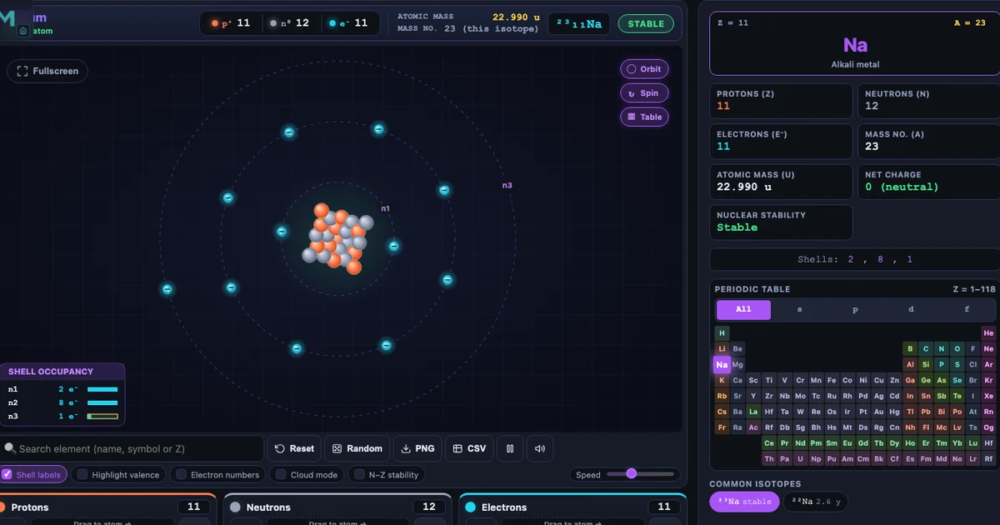
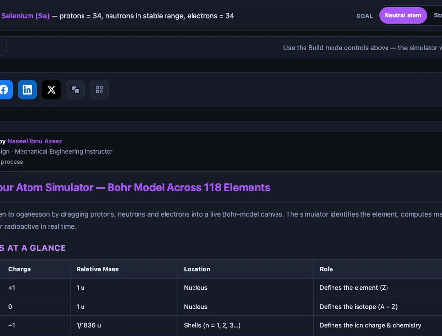

Build Your Atom: A Complete Guide to the Interactive Bohr Model Simulator

- Build Your Atom is a free browser-based Bohr model simulator: you add protons, neutrons, and electrons to construct any of the 118 elements, with a live atom strip showing element name, atomic number Z, mass number A = Z + N, and a STABLE/UNSTABLE badge.
- The atomic number Z fixes the element; changing the neutron count N produces isotopes (e.g. C-12 and C-13 are stable, C-14 is unstable), and adding or removing electrons makes ions where charge = Z − (electron count).
- Shells fill by the Bohr-Bury pattern 2, 8, 8, 18, 18, 32, 32 (summing to 118), matching the periodic table's row lengths; the tool includes Build, Explore, Practice, and Quiz modes and needs no login.
Most students can tell you that an atom has protons, neutrons, and electrons. What they struggle to explain is why the number of each particle matters — why one extra neutron makes carbon-14 radioactive while carbon-12 is stable, why stripping an electron from sodium turns a soft grey metal into a dissolved ion that powers nerve signals. Those distinctions live in the numbers. The Build Your Atom simulator makes the numbers physical: you click to add each particle, watch the Bohr model respond in real time, and the atom tells you what it is.
The tool covers all 118 elements, handles isotopes and ions, includes a Practice mode with target-element challenges, and ends with a timed Quiz. It runs in any browser, requires no login, and has been tuned for every level from middle-school NGSS through A-Level and AP Chemistry.
Why Atomic Structure Is Harder to Visualise Than It Looks
Every chemistry textbook contains the same diagram — a nucleus with circles orbiting around it. Students draw it, label it, copy it for assessments. Then they sit a test and write that carbon-14 has 6 protons and 8 neutrons, that sodium-23 has 11 protons, 12 neutrons, and 11 electrons. The numbers arrive. The picture doesn't follow.
The problem is that diagrams are static. They can show you the finished atom; they can't show you what happens as you build one. They can label "shell 2 holds 8 electrons" in a caption; they can't show the eighth electron arriving and closing the shell, or the ninth electron being forced outward to start shell 3. Those dynamics are the lesson. And static images, no matter how carefully drawn, can't deliver them.
There's a second gap. Standard exercises ask students to calculate the number of neutrons or the mass number. They don't ask: what happens if you add one neutron too many? What does that do? What does "radioactive isotope" actually mean in terms of the nucleus you just built? Without a simulator to push and probe, the answer stays locked in a definition.
What the Build Your Atom Simulator Contains
The tool has four modes: Build (free construction), Explore (periodic table reference with element cards), Practice (target-element challenges where you have to build a given element correctly), and Quiz (randomised multiple-choice questions covering atomic number, mass number, isotopes, ions, and electron configuration).
The core data is a database of all 118 elements. Each element record carries: standard atomic mass, most-stable mass number, the neutron range that produces stable isotopes, element category (alkali metal, noble gas, transition metal, etc.), period, and group. When you add protons, the simulator identifies the element in real time — you see the symbol and name appear on the atom strip before you've consciously counted.
Shell filling follows the Bohr-Bury school pattern:
\[\text{Shell capacities: } 2,\ 8,\ 8,\ 18,\ 18,\ 32,\ 32 \quad (\text{sum} = 118)\]
This matches the row lengths of the periodic table exactly — Period 1 has 2 elements, Period 2 has 8, and so on. When you add the ninth electron, shell 2 closes and shell 3 opens automatically with the new electron on the outer orbit. The visual is immediate: the Bohr model redraws itself with a new dashed orbit ring, the electron settles onto it, and the valence count updates in the atom strip.
The Atom Strip: Everything You Need Without Leaving the Canvas
One of the simulator's most useful design decisions is the atom strip — a readout panel that sits above the canvas and updates on every particle addition. It shows:
Element name and symbol — appears as soon as the first proton is dropped (Z=1 → Hydrogen; Z=8 → Oxygen; Z=79 → Gold).
Particle counts — p⁺, n⁰, e⁻ updated live.
Atomic mass and mass number A — A = Z + N, so adding a neutron changes A but not Z.
Isotope notation — shown in standard superscript form: ²³Na, ¹²C, ³⁵Cl.
STABLE / UNSTABLE badge — green or red, glowing on each change.
The relationship between Z and element identity is one of the most important facts in chemistry, and the atom strip makes it viscerally clear. Students who have only memorised "Z = atomic number" watch it come alive when they add the 19th proton and "Potassium" appears — even before they've added any neutrons or electrons.
Isotopes: The Neutron Experiment Every Student Should Run
Isotopes are where the simulator earns its place in every chemistry classroom. Build a neutral carbon atom — 6 protons, 6 neutrons, 6 electrons. The strip reads Carbon-12, STABLE. Add a neutron. Carbon-13: STABLE. Add another. Carbon-14: UNSTABLE — the badge turns red.
\[A = Z + N \qquad \Rightarrow \qquad ^{12}\text{C}: 6p + 6n \quad ^{13}\text{C}: 6p + 7n \quad ^{14}\text{C}: 6p + 8n\]
That three-click sequence teaches the entire concept of isotope stability: same element (same Z), different mass number (different N), different nuclear stability. It's not a definition students have copied from a board. It's a result they produced themselves by clicking a button one too many times.
The simulator uses curated stable-isotope data from NNDC/IAEA tables. Elements like Technetium (Z=43) and Promethium (Z=61) have no stable isotopes at all — building any isotope of Tc shows UNSTABLE immediately. Every element above polonium (Z=84) is permanently UNSTABLE, making these elements a natural entry point into the topic of radioactivity and nuclear physics.
Ion Formation: Making Charges Visible
Ions are abstract. Textbooks show Na⁺ and Cl⁻ as charged dots with electron-dot structures around them. Students know the charge is there; they rarely understand it in terms of something they could physically alter.
In Build Your Atom, it's mechanical. Build neutral sodium: 11 protons, 12 neutrons, 11 electrons. Charge reads zero. Then remove one electron from the electron bin. The atom strip immediately shows Na⁺, charge +1. The electron count drops to 10 — the neon configuration. Add the electron back. Charge returns to zero. Add one more. Na⁻, charge −1.
The same experiment with oxygen is equally striking. Start with neutral oxygen (8p, 8e). Remove one electron → O⁺. Remove a second → O²⁺. Add electrons instead: 8p, 9e → O⁻, 8p, 10e → O²⁻ (the most stable oxide ion, identical electron count to neon). The oxide ion's stability — and the instability of O⁻ — become obvious from the structure rather than from a rule to memorise.
For ions specifically, the key formula is:
\[\text{Charge} = Z - e^{-} \quad \Rightarrow \quad \text{Na}^+: 11 - 10 = +1 \qquad \text{O}^{2-}: 8 - 10 = -2\]
Specific Use Cases That Justify This Tool in Every Chemistry Unit
Use Case 1 — Introducing Atomic Number and Mass Number (Ages 12–14)
Ask students to build hydrogen (1p, 0n, 1e). Read the strip: Z=1, A=1, STABLE. Now add a neutron. Z=1 still; A=2 — deuterium. Add another neutron. Z=1; A=3 — tritium, UNSTABLE. Three particle additions, three different isotopes, one element. No lecture slide has ever made that point this fast.
Use Case 2 — Demonstrating Electron Shell Filling (Ages 13–16)
Remove all particles and build up electrons one by one while watching the Bohr model grow. First two electrons fill shell 1; neon's shell 2 completes at 10 electrons. When the 11th electron arrives — for sodium — it opens shell 3 alone. Students see the valence electron physically separate from the filled inner shells. The concept of "outer electron" becomes a location, not a phrase.
Use Case 3 — Stable vs Radioactive Isotopes (Ages 14–18)
Build C-12, C-13, and C-14 in sequence. Then move to iodine (Z=53): I-127 (stable, used in medicine) vs I-131 (unstable, 8.02-day half-life, used in cancer radiotherapy). Students discover for themselves that heavier elements need proportionally more neutrons to stay stable — and that there's a narrow window. The tool's IAEA-sourced neutron ranges make this accurate rather than approximate.
Use Case 4 — Ion Charges and Periodic Table Groups (Ages 14–17)
Build neutral Group 1 atoms (Li, Na, K) and remove one electron from each. All give +1 ions. Build Group 2 atoms (Mg, Ca) and remove two electrons. All give +2 ions. Build Group 17 atoms (F, Cl, Br) and add one electron each. All give −1 ions. The group-to-ion-charge relationship emerges as a pattern from the simulation, not a rule memorised from a table.
Use Case 5 — Practice Mode as a Revision Tool (Ages 14–18)
Practice mode presents a target element and asks students to build it from scratch — the correct number of protons, neutrons, and electrons. It scores each attempt and cycles through increasingly complex targets. Unlike a worksheet, the simulator gives immediate feedback on every particle click, so mistakes are corrected in seconds rather than at marking time. The Quiz mode adds multiple-choice questions on mass number, charge, and electron configuration, useful for exam-period retrieval practice.

How to Run a 40-Minute Atomic Structure Lesson
Warm-up (5 min). Open the simulator on the projector. Build hydrogen — 1 proton, 1 electron. Ask: "What would happen to the element if I added another proton?" Take guesses. Add it. Helium appears. The class just discovered that proton count defines element identity before you've written a word on the board.
Guided build (10 min). Guide the class through building neon (10p, 10n, 10e) step by step. Narrate each shell as it fills: "Shell 1 fills at 2 electrons — helium configuration. Shell 2 fills at 10 — neon. Watch what happens when we add the 11th electron." Shell 3 opens. Sodium. "Now we've got one lonely electron on the outside. That's why sodium is reactive." The cross-link to chemical bonding and the Build a Compound bonding simulator becomes natural here.
Isotope experiment (10 min). Students work individually. Build C-12 (stable), C-13 (stable), C-14 (unstable). Record the mass number and stability badge for each. Then try iodine: build I-127 (stable) and I-131 (unstable). The question: "What do the stable isotopes have in common?" Leads directly to the concept of the neutron-to-proton ratio.
Ion challenge (10 min). Build neutral sodium (11p, 12n, 11e). Remove one electron. Record the charge. Build neutral chlorine (17p, 18n, 17e). Add one electron. Record the charge. Ask: "If Na⁺ and Cl⁻ meet, what happens?" This bridges naturally to the ionic bond simulation in the chemical bonds tool — students can see the ion they just created become the donor in a NaCl animation.
Practice mode (5 min). Switch to Practice mode. Give students three targets to build independently. Track the class score as a group challenge. Use as a formative assessment check before the lesson ends.
Try It Yourself
All tools below are free — no account, no download.
Key Takeaways
- Build Your Atom covers all 118 elements — students can construct any atom by dragging protons, neutrons, and electrons, with the Bohr model and atom strip updating live on every particle addition.
- The atomic number Z defines the element; the mass number A = Z + N defines the isotope. Adding one neutron to C-12 gives C-13 (stable); adding a second gives C-14 (unstable, radioactive) — a concept demonstrated in three clicks.
- Ion formation is mechanical, not abstract: removing one electron from neutral Na (11p, 11e) gives Na⁺ (11p, 10e); adding two electrons to neutral O (8p, 8e) gives O²⁻ (8p, 10e), the charge displayed instantly on the atom strip.
- The STABLE/UNSTABLE badge is sourced from IAEA isotope data. Elements above polonium (Z ≥ 84) are permanently UNSTABLE, making the simulator accurate for introducing radioactivity without requiring a separate resource.
- Shell filling follows the Bohr-Bury convention (2,8,8,18,18,32,32) and matches the periodic table's row structure — when shell 2 closes and shell 3 opens for sodium's 11th electron, Period 3 begins right there on the canvas.
- Practice mode turns atom-building into a scored challenge; Quiz mode generates multiple-choice questions on mass number, charge, and configuration — making the single tool cover discovery, practice, and retrieval in one session.
Frequently Asked Questions
What is the Build Your Atom simulator and what can it do?
Build Your Atom is a free browser-based interactive Bohr model simulator where students drag protons, neutrons, and electrons to construct any of 118 elements. As particles are added, the tool shows a live animated Bohr model, identifies the element with its symbol and name, displays atomic number (Z) and mass number (A), reports the shell configuration, and shows a STABLE or UNSTABLE badge based on whether the neutron count falls in the known stable-isotope range. It supports four modes: Build (free construction), Explore (periodic table reference), Practice (target-element challenges), and Quiz (timed multiple-choice).
How do I build an ion in the Build Your Atom simulator?
Build a neutral atom first by adding equal numbers of protons and electrons. Then add or remove electrons using the electron bin buttons. Removing electrons from a neutral atom creates a positive ion (cation) — for example, removing one electron from neutral sodium (11p, 11e) gives Na⁺ (11p, 10e). Adding extra electrons creates a negative ion (anion) — adding two electrons to neutral oxygen (8p, 8e) gives O²⁻ (8p, 10e). The ion charge badge and atom strip update instantly.
What does the STABLE / UNSTABLE badge mean in the simulator?
The STABLE badge (green) appears when the neutron count falls inside the known stable-isotope range for the current element. Outside that range the badge turns UNSTABLE (red) and glows — indicating the nucleus is radioactive. For example, Carbon-14 (6p, 8n) is UNSTABLE while Carbon-12 (6p, 6n) and Carbon-13 (6p, 7n) are STABLE. Elements with Z ≥ 84 (polonium and beyond) are always UNSTABLE — they have no stable isotopes at all. This makes the simulator a powerful tool for introducing radioactivity concepts.
How does the simulator handle electron shell filling?
The simulator follows the Bohr-Bury school-level shell filling pattern: shells hold 2, 8, 8, 18, 18, 32, 32 electrons, summing to 118. When you fill a shell to its capacity and click to add the next electron, the simulator automatically opens a new outer shell at the next ring radius and places the electron there. Inner shells are drawn with dimmer orbits; the valence shell is highlighted with a dashed ring. This visual distinction makes period-row structure immediately obvious.
Which chemistry curricula does Build Your Atom support?
The simulator supports GCSE Chemistry (atomic number, mass number, isotopes, electron configuration, ion formation), A-Level Chemistry (electron shells up to period 6, ionisation energy discussion), AP Chemistry Unit 1 (atomic structure and periodicity), IB Chemistry Topic 2 (atomic structure), and NGSS middle-school physical science (structure of matter, PS1.A). It is also used in TVET and vocational science programmes as a hands-on first lesson on atomic structure before students move on to bonding and reactions.
Atomic structure is the foundation every chemistry concept builds on. The moment students understand that Z defines the element, that extra neutrons make isotopes, and that electrons carry the charge — everything downstream clicks into place. Build Your Atom is where that moment happens.
Open the Build Your Atom simulator, drop 11 protons onto the canvas, and watch sodium appear before you've finished counting.